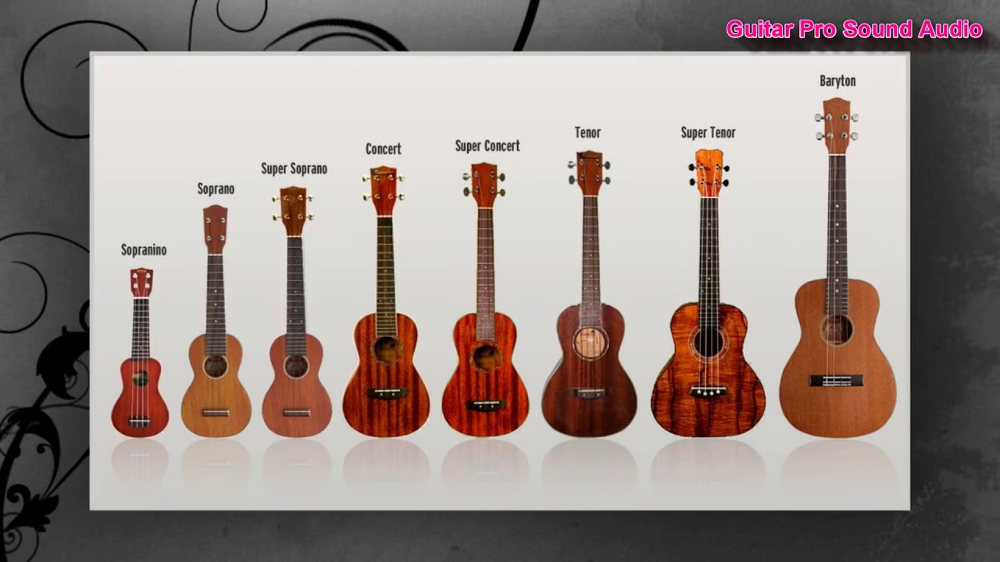
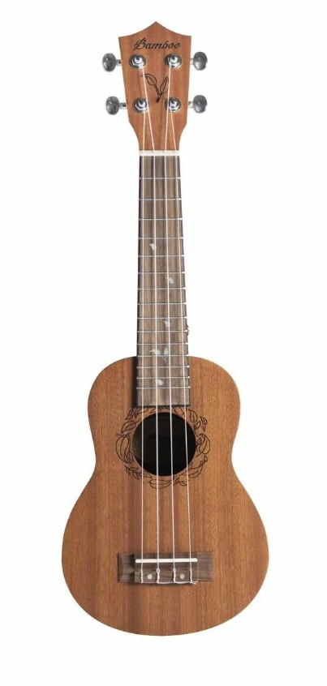

Выбери устройство, чтобы мы подстроили интерфейс под тебя.
Всё об Укулеле 🌺 🌴 🥥
Твой музыкальный центр
Здесь собраны все аккорды и огромная библиотека песен. Учись, играй прямо в браузере и находи любимые треки!
×
МинМакс
Текст:
Какие бывают укулеле?

Сопрано (Soprano) — ~53 см
Это та самая «классическая» укулеле, которую мы привыкли видеть в кино. ПЛЮСЫ: Самый компактный размер. МИНУСЫ: Маленькое расстояние между ладами.
Концерт (Concert) — ~58 см
Золотая середина и самый популярный выбор для новичков. ПЛЮСЫ: Корпус чуть больше, звук громче и объемнее.
Тенор (Tenor) — ~66 см
Выбор профессионалов. ПЛЮСЫ: Глубокий, насыщенный звук. МИНУСЫ: Начинает терять тот самый «пляжный» звонкий характер.
Баритон (Baritone) — ~76 см
Особняк в мире укулеле. ПЛЮСЫ: Максимально глубокий, бархатный звук (строй DGBE).
Настройка укулеле
Новая укулеле — новые струны!
На новых укулеле стоят новые струны, а новые струны нуждаются в настройке. Чтобы растянуть струны, настрой укулеле и играй на ней так часто, как это возможно.
Стандартный строй укулеле — GCEA.
Строение укулеле
Верхняя часть
Голова грифа
Колки
Верхний порожек
Гриф
Гриф
Лады
Струны
Корпус
Верхняя дека
Резонаторное отверстие
Бридж
Нижний порожек
Интерактивный осмотр инструмента
Наведи курсор на укулеле слева, чтобы рассмотреть детали дерева и фурнитуры под увеличением справа.

На что обратить внимание:
Материал корпуса: махагони, акация, ель
Порожек: Пластик, графит, дерево, кость
Розетка: Укрепление конструкции, Защита от износа, Эстетика